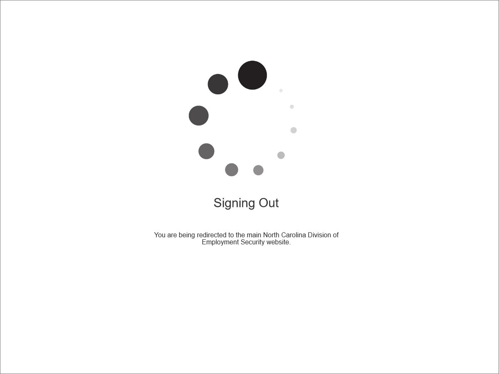
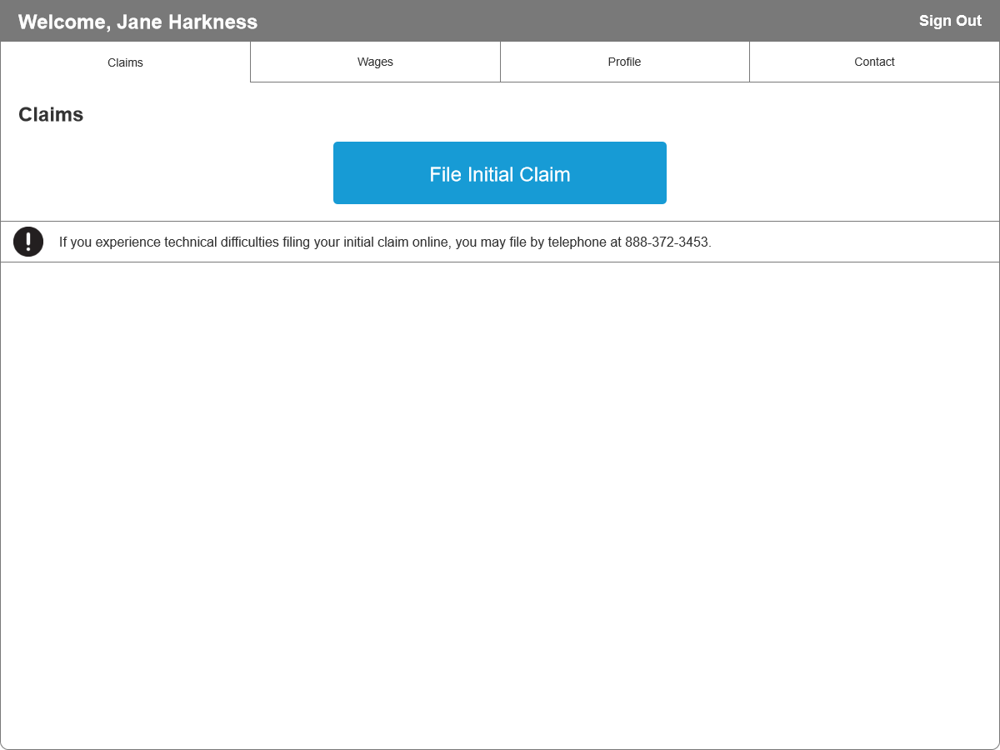
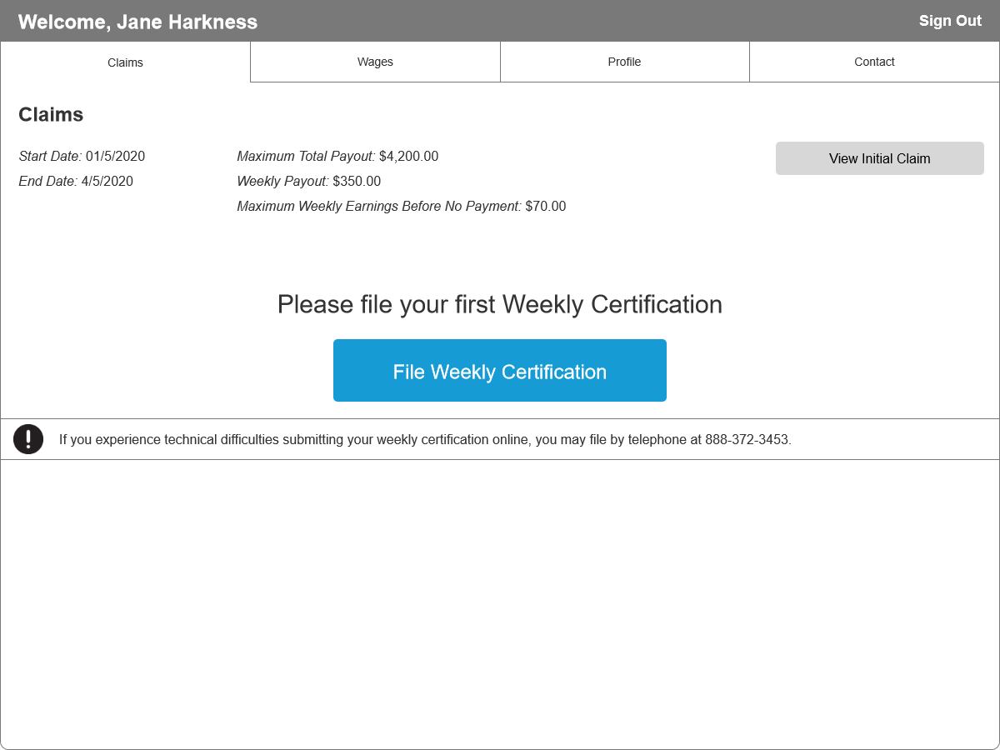
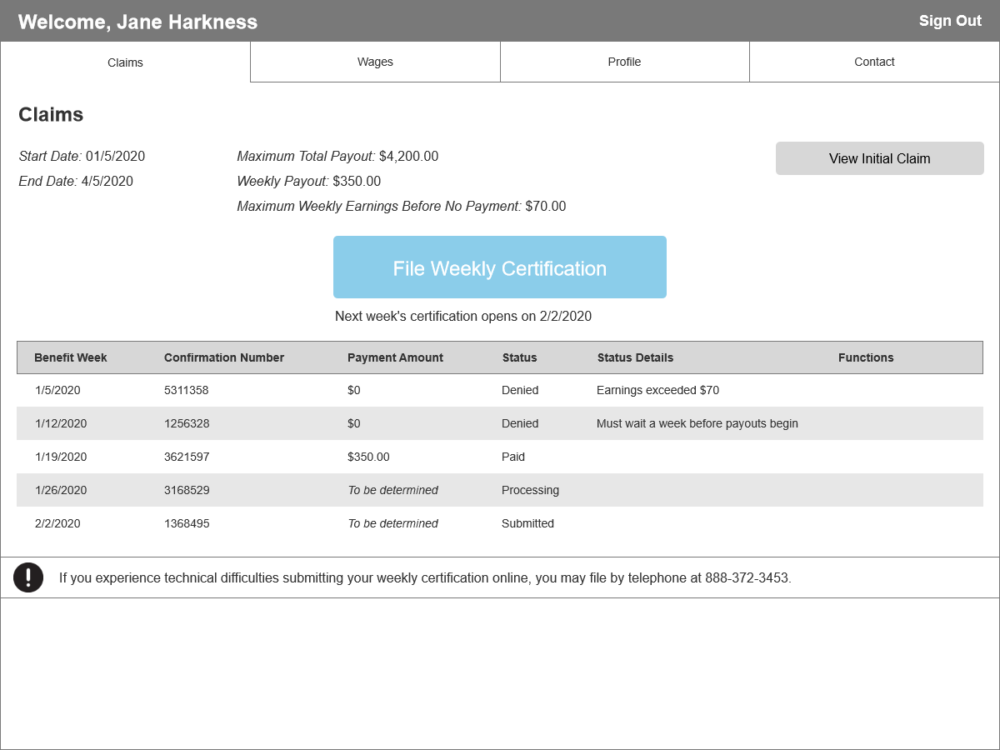
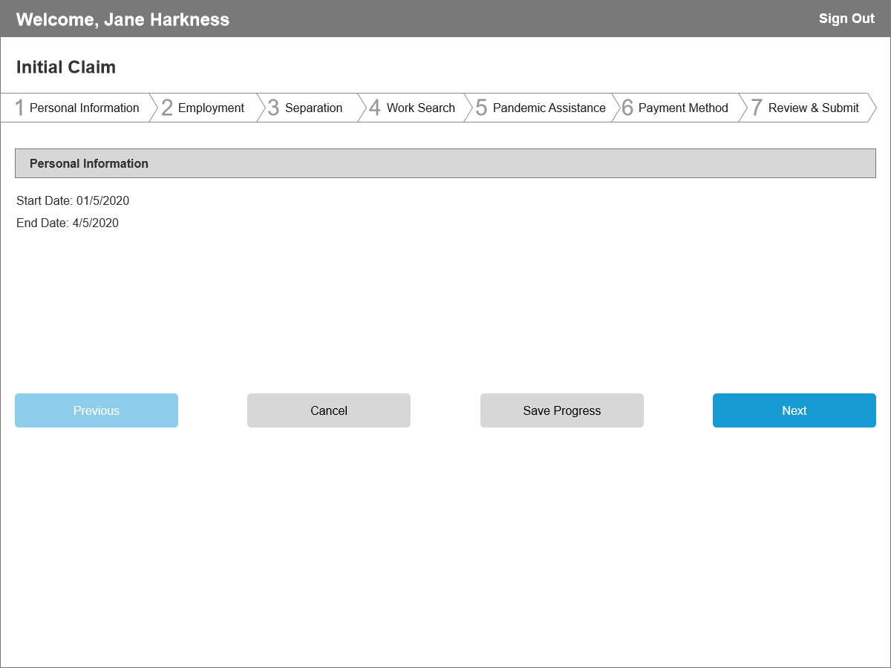
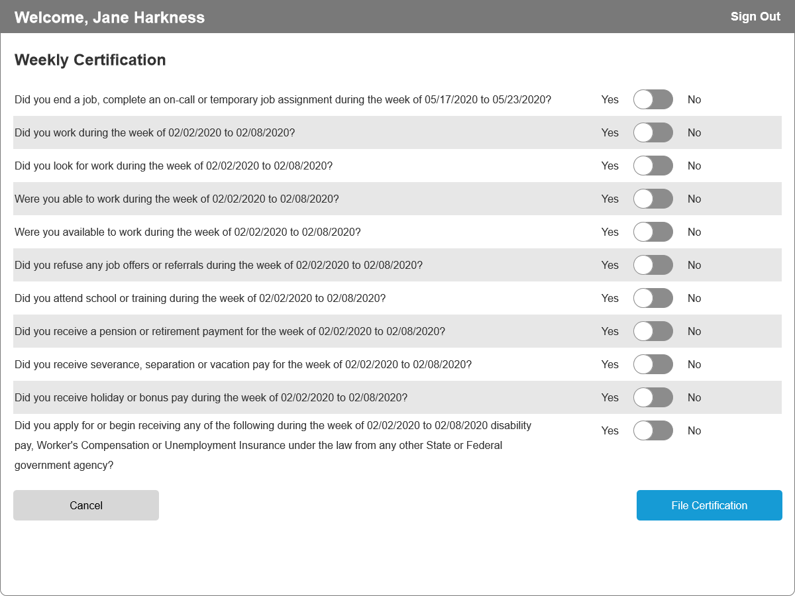
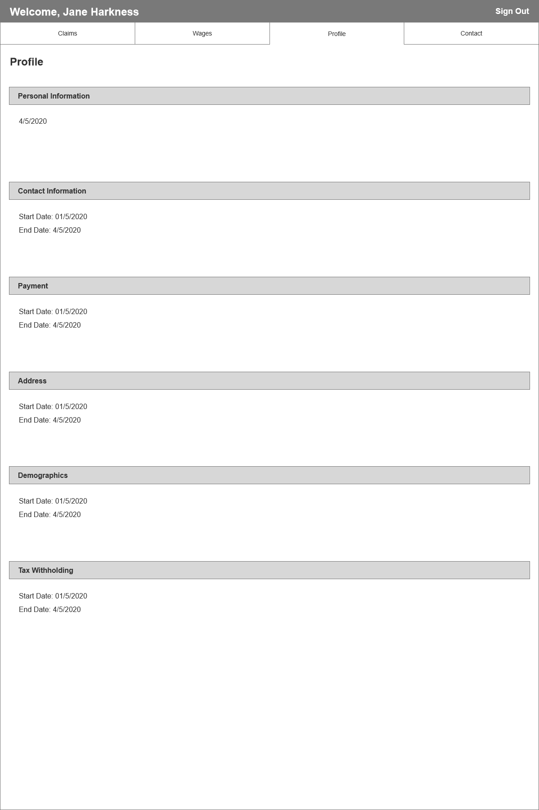

Analysis
AKA "What is so annoying about this site?"
Current live site: North Carolina's Division of Employment Security
Some of the information is missing from the gallery screen shots as I had to blank out a lot of personal information.
I'm not sure which annoys me more: that it takes me about 6 clicks to get to anything of relevance once I start at "Sign In" or that I have no idea what's relevant to me once I get there. Or maybe it's the big banner at the top saying not to use the Back button in the browser (really?.. REALLY?). And if this site passes WCAG visibility standards, I'll eat burnt brownies.
So there's a list of grievances here. It's long. A good afternoon's and a few cups of tea worth.
Now that's out, I know what's wrong. How do I make it right?
Well, what does this site need to do? It needs to allow quick filing of an initial claim, a weekly certification, then a visual representation of claim status. There's my core. If anything on the site doesn't revolve around this, it should.
Usually this would also be a good time for focus groups. What do others like about the site? What do they not? What are they after when they come here? It's all about getting more points of feedback then just myself. Skipping this in favor of trying to get something up on the portfolio site, but when I get more time for a round 2, something I'd like to come back to.
I can get an acceptable temporary alternative to this by browsing social media, particular the Raleigh and North Carolina subreddits of reddit.com. People have been using the postings to get questions answered along with other advice and help.


Wireframes
AKA "This was a 100 piece puzzle. Why do I have 101 in the box?"
Please note this is a sample in progress for my portfolio, so the wireframe samples you see here are incomplete. It should still give you an idea of what something in progress looks like for me.
Once the core has been figured out, the next stage is to get users in and out. Make it fast, make it easy, and get them on their way. They have better things to do.
Citizens need to be able to see exactly where they are in the process and what they need to do next. After signing in is a great place to show progress and items of attention. Why make them dig?
They also need to know where they are and where they're looking at, so a sense of location and structure in the navigation is important.
Again, another good time for users, but what I'm skipping in favor of trying to get something up on the portfolio site quickly. This time it'd be more around tasking and one on one. Given a couple of core tasks and a couple of side quests, how easily are users able to complete them? Take the feedback, revise, do it again. The repetition of this is typically boxed in by commitment on deliverables, and doing short quick bursts over single screens and single path flows is typically better than the whole site at once.







